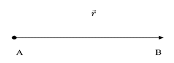
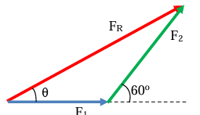
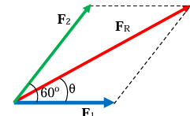

Operasi Vektor
Ilmu fisika, kita kenal istilah besaran yang hanya memiliki nilai saja dan besaran yang memiliki nilai dan arah. Missal, tinggi badan seseorang hanya memiliki nilai saja, sedangkan kecepatan mobil di jalan tol memiliki nilai dan arah tentunya. Sehingga, besaran yang hanya memiliki nilai saja disebut sebagai besaran scalar dan besaran yang memiliki nilai dan arah disebut sebagai besaran vector. Dapatkah Anda menyebutkan beberapa besaran lain yang termasuk besaran scalar dan besaran vector?
Terdapat empat aspek yang perlu diperhatikan dalam menggambarkan vector, yaitu titik tangkap, titik ujung, Panjang anak panah (vector), dan arah anak panah (vector).
- Titik pangkal atau titik tangkap adalah titik tempat besaran yang diwakili oleh vektor tersebut bermula. Apabila vektor yang digambarkan mewakili gaya maka titik pangkal menyatakan titik tempat bekerjanya gaya, namun apabila vektor yang digambarkan menyatakan perpindahan maka titik pangkal vektor perpindahan itu mewakili titik dimulainya perpindahan.
- Titik ujung vektor tidak memiliki makna khusus, titik ujung digambar setelah diketahui titik pangkal, panjang dan arah vektor. Panjang anak panah mewakili nilai vektor. Vektor yang lebih panjang memiliki nilai lebih besar. Apabila panjang suatu vektor dua kali panjang vektor yang lain maka nilai vektor tersebut dua kali nilai vektor yang lainnya. Arah anak panah mewakili arah vektor.

Gambar 2.1 menunjukkan sebuah vektor yang berpangkal di titik A dan berujung dititik B. Pada gambar tersebut ditunjukkan pula bahwa arah vektor adalah ke kanan
Titik A: Titik pangkal/titik tangkap/titik awal
Titik B: Titik ujung/titik akhir Panjang vektor 𝒓⃗ = |𝒓⃗ |
Penjumlahan Vektor
Aturan penjumlahan besaran vektor berbeda dengan penjumlahan besaran skalar. Massa merupakan besaran skalar, massa 3 kg dengan 4 kg jika dijumlahkan pasti hasilnya 7 kg. Sedangkan gaya merupakan besaran vektor, gaya 3 N dengan 4 N jika dijumlahkan hasilnya 1 N sampai 7 N. Hasil 1 N didapatkan ketika kedua vektor gaya tersebut berlawanan arah (sudut apitnya 180º), hasil 7 N didapatkan ketika kedua vektor gaya tersebut searah (sudut apitnya 0º), dan hasilnya bernilai 5 N ketika kedua vektor saling tegak lurus (sudut apitnya 90º). Dari ilustrasi ini dapat disimpulkan, semakin besar sudut apit kedua vektor, jika dijumlahkan hasilnya semakin kecil.
Penjumlahan besaran vektor dapat ditentukan dengan metode grafis dan analiltis. Cara grafis dibagi menjadi dua metode yaitu metode polygon dan metode jajaran genjang. Sedangkan metode analitis juga terbagi 2 yaitu metode rumus cosinus dan metode urai vektor. Vektor hasil penjumlahan disebut dengan vektor resultan.
Metode Polygon/segi banyak/ujung-pangkal
Perhatikan langkah-langkah nenentukan resultan verktor dengan metode polygon berikut.
- Tetapkan skala, misalkan dengan skala 1 : 1 berarti gaya 3 N digambarkan dengan anak panah sepanjang 3 cm atau misalkan dengan skala 1 : 2 berarti gaya 3 N digambar dengan anak panah sepanjang 1,5 cm.
- Gambar vektor F1 terlebih dahulu kemudian gambar pangkal (titik tangkap) vektor F2 berhimpit dengan dengan ujung vektor F1. Jika banyaknya vektor yang dijumlahkan lebih dari dua, maka pangkal vektor berikutnya dihimpitkan dengan vektor sebelumnya sampai selesai.
- Gambarkan vektor resultan dengan membuat garis panah dari pangkal vektor pertama ke ujung vektor terakhir.
Langkah-langkah di atas jika kalian lakukan akan dihasilkan gambar seperti berikut:
gambar 2.2 Menggambar vector metode polygon
Dengan mengukur panjang FR, maka didapatkan besarnya besarnya vektor resultan dan untuk mengetahui arah vektor resultan terhadap garis mendatar dilakukan dengan mengukur sudut θ. Praktikkan langkah di atas, maka akan kalian dapatkan FR = 6,08 cm ≈ 6,1 cm dan θ≈ 35º.
Dari penyelesaian di atas dapat disimpulkan, jika dua vektor dijumlahkan dengan metode polygon menghasilkan segitiga. Jika 3 vektor dijumlahkan akan menghasilkan segi empat, jika 7 vektor dijumlahkan pasti hasilnya segi 8. Maka metode ini dikenal pula dengan metode segibanyak.
Metode Jajaran genjang/satu-pangkal
Perhatikan langkah-langkah nenentukan resultan verktor dengan metode jajaran berikut:
- Langkah pertama metode ini sama dengan metode polygon
- Gambar vektor F1 terlebih dahulu kemudian gambar vektor F2 dengan pangkal vektor menyatu dengan pangkal vektor F1
- Buatlah pola jajaran genjang.
- Buat garis panah membentuk diagonal jajaran genjang dengan pangkal menyatu dengan pangkal vektor yang diresultankan.
Langkah-langkah di atas jika kalian lakukan akan dihasilkan gambar seperti berikut:
gambar 2.3 Menggambar vector metode jajaran genjang
Dengan mengukur panjang FR, maka didapatkan besarnya besarnya vektor resultan dan untuk mengetahui arah vektor resultan terhadap garis mendatar dilakukan dengan mengukur sudut θ. Praktikkan langkah di atas, maka akan kalian dapatkan FR = 6,08 cm ≈ 6,1 cm dan θ≈ 35º.